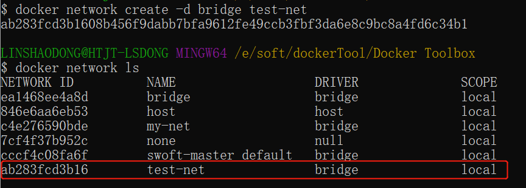
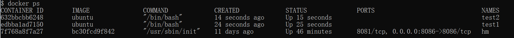
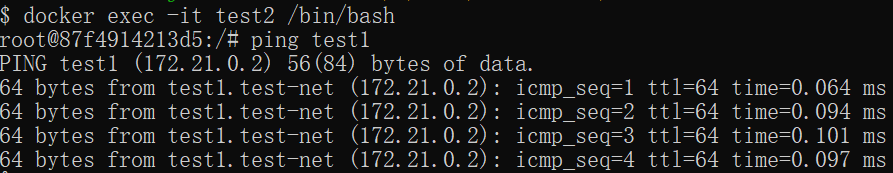
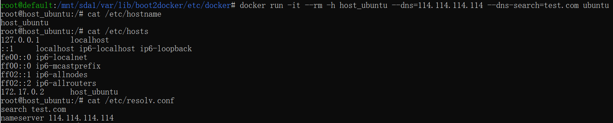

Docker コンテナ接続
前回、dockerコンテナ内で実行されているサービスにネットワークポート経由でアクセスできるようにしました。
コンテナ内ではネットワークアプリケーションを実行できます。外部からもこれらのアプリケーションにアクセスできるようにするには、次の方法を使用できます。-P 或 -pパラメータでポートマッピングを指定します。
次に、ポート経由でdockerコンテナに接続する方法を実践します。
ネットワークポートマッピング
pythonアプリケーションのコンテナを作成しました。
runoob@runoob:~$ docker run -d -P training/webapp python app.py fce072cc88cee71b1cdceb57c2821d054a4a59f67da6b416fceb5593f059fc6d
また、コンテナにバインドするネットワークアドレスを指定できます。たとえば、127.0.0.1 にバインドできます。
私たちは使用します-Pポート番号をバインドし、使用しますdocker psコンテナのポート 5000 がホストのポート 32768 にバインドされていることが確認できます。
runoob@runoob:~$ docker ps CONTAINER ID IMAGE COMMAND ... PORTS NAMES fce072cc88ce training/webapp "python app.py" ... 0.0.0.0:32768->5000/tcp grave_hopper
次を使用することもできます-pフラグでコンテナのポートをホストのポートにバインドすることを指定します。
2つの方法の違いは次のとおりです。
- -P：コンテナ内部のポートをランダムにホストのポートにマッピングします。
- -p：コンテナ内部のポートを指定されたホストのポートにバインドします。
runoob@runoob:~$ docker run -d -p 5000:5000 training/webapp python app.py 33e4523d30aaf0258915c368e66e03b49535de0ef20317d3f639d40222ba6bc0
runoob@runoob:~$ docker ps CONTAINER ID IMAGE COMMAND ... PORTS NAMES 33e4523d30aa training/webapp "python app.py" ... 0.0.0.0:5000->5000/tcp berserk_bartik fce072cc88ce training/webapp "python app.py" ... 0.0.0.0:32768->5000/tcp grave_hopper
また、コンテナにバインドするネットワークアドレスを指定できます。たとえば、127.0.0.1 にバインドできます。
runoob@runoob:~$ docker run -d -p 127.0.0.1:5001:5000 training/webapp python app.py 95c6ceef88ca3e71eaf303c2833fd6701d8d1b2572b5613b5a932dfdfe8a857c runoob@runoob:~$ docker ps CONTAINER ID IMAGE COMMAND ... PORTS NAMES 95c6ceef88ca training/webapp "python app.py" ... 5000/tcp, 127.0.0.1:5001->5000/tcp adoring_stonebraker 33e4523d30aa training/webapp "python app.py" ... 0.0.0.0:5000->5000/tcp berserk_bartik fce072cc88ce training/webapp "python app.py" ... 0.0.0.0:32768->5000/tcp grave_hopper
これにより、127.0.0.1:5001 にアクセスすることで、コンテナのポート 5000 にアクセスできます。
上記の例では、デフォルトでTCPポートにバインドされます。UDPポートをバインドする場合は、ポートの後ろに追加できます。/udp。
runoob@runoob:~$ docker run -d -p 127.0.0.1:5000:5000/udp training/webapp python app.py 6779686f06f6204579c1d655dd8b2b31e8e809b245a97b2d3a8e35abe9dcd22a runoob@runoob:~$ docker ps CONTAINER ID IMAGE COMMAND ... PORTS NAMES 6779686f06f6 training/webapp "python app.py" ... 5000/tcp, 127.0.0.1:5000->5000/udp drunk_visvesvaraya 95c6ceef88ca training/webapp "python app.py" ... 5000/tcp, 127.0.0.1:5001->5000/tcp adoring_stonebraker 33e4523d30aa training/webapp "python app.py" ... 0.0.0.0:5000->5000/tcp berserk_bartik fce072cc88ce training/webapp "python app.py" ... 0.0.0.0:32768->5000/tcp grave_hopper
docker portコマンドを使用すると、ポートのバインド状況をすばやく確認できます。
runoob@runoob:~$ docker port adoring_stonebraker 5000 127.0.0.1:5001
Docker コンテナの相互接続
ポートマッピングは、dockerを別のコンテナに接続する唯一の方法ではありません。
dockerには、複数のコンテナを相互に接続し、接続情報を共有できる接続システムがあります。
docker接続は親子関係を作成し、親コンテナは子コンテナの情報を確認できます。
コンテナの命名
コンテナを作成すると、dockerは自動的に名前を付けます。また、次を使用することもできます。--name識別子でコンテナに名前を付けます。例：
runoob@runoob:~$ docker run -d -P --name runoob training/webapp python app.py 43780a6eabaaf14e590b6e849235c75f3012995403f97749775e38436db9a441
私たちは次を使用できますdocker psコマンドでコンテナ名を確認できます。
runoob@runoob:~$ docker ps -l CONTAINER ID IMAGE COMMAND ... PORTS NAMES 43780a6eabaa training/webapp "python app.py" ... 0.0.0.0:32769->5000/tcp runoob
新しいネットワークの作成
まず、新しいDockerネットワークを作成します。$ docker network create -d bridge test-net

パラメータの説明：
-d：パラメータはDockerネットワークタイプを指定します。bridge、overlayがあります。
ここで、overlayネットワークタイプはSwarmモードで使用されます。このセクションでは無視して構いません。
コンテナの接続
新しいtest-netネットワークに接続するコンテナを実行します:
$ docker run -itd --name test1 --network test-net ubuntu /bin/bash
新しいターミナルを開き、もう1つのコンテナを実行してtest-netネットワークに参加させます:
$ docker run -itd --name test2 --network test-net ubuntu /bin/bash
画像をクリックして拡大表示：

次に、pingを使用して、test1コンテナとtest2コンテナが相互接続されたことを確認します。
test1、test2コンテナ内にpingコマンドがない場合は、コンテナ内で次のコマンドを実行してpingをインストールします（学んですぐ使う：1つのコンテナにインストールして、コンテナをイメージにコミットし、新しいイメージで上記の2つのコンテナを再実行できます）。
apt-get update apt install iputils-ping
test1コンテナで次のコマンドを入力します：
画像をクリックして拡大表示：

同様に、test2コンテナでも正常に接続されます:
画像をクリックして拡大表示：

これで、test1コンテナとtest2コンテナの相互接続が確立されました。
複数のコンテナを相互接続する必要がある場合は、Docker Composeを使用することをお勧めします。後ほど紹介します。
DNSの設定
ホストマシンの /etc/docker/daemon.json ファイルに次の内容を追加して、すべてのコンテナのDNSを設定できます：
{
"dns" : [
"114.114.114.114",
"8.8.8.8"
]
}
設定後、起動するコンテナのDNSは自動的に 114.114.114.114 および 8.8.8.8 に設定されます。
設定後、dockerを再起動して有効にする必要があります。
コンテナのDNSが有効かどうかを確認するには、次のコマンドを使用します。コンテナのDNS情報が出力されます：
$ docker run -it --rm ubuntu cat etc/resolv.conf
画像をクリックして拡大表示：

コンテナの設定を手動で指定
指定したコンテナでのみDNSを設定したい場合は、次のコマンドを使用できます：
$ docker run -it --rm -h host_ubuntu --dns=114.114.114.114 --dns-search=test.com ubuntu
パラメータの説明：
--rm：コンテナが終了するときにコンテナ内のファイルシステムを自動的にクリーンアップします。
-h HOSTNAME または --hostname=HOSTNAME： コンテナのホスト名を設定します。これはコンテナ内の /etc/hostname と /etc/hosts に書き込まれます。
--dns=IP_ADDRESS： コンテナの /etc/resolv.conf にDNSサーバーを追加し、コンテナがこのサーバーを使用して /etc/hosts にないすべてのホスト名を解決できるようにします。
--dns-search=DOMAIN： コンテナの検索ドメインを設定します。検索ドメインを .example.com に設定すると、host という名前のホストを検索するとき、DNSは host だけでなく host.example.com も検索します。
画像をクリックして拡大表示：

コンテナ起動時に指定しない場合--dns 和 --dns-search、Dockerはデフォルトでホストマシンの /etc/resolv.conf を使用してコンテナのDNSを設定します。
その他の拡張
sssdfsdfsd
491***752@qq.com
参考URL
Windowsシステムでdockerコンテナにポートマッピングできない問題を解決する
1、問題：
Windows Homeエディションにdockerをインストールし、その中でjupyter notebookなどのサービスを実行しようとしましたが、マッピング完了後、ホストのブラウザでlocalhost:portを開いても対応するサービスにアクセスできません。
2、問題が発生する原因：
dockerはLinux上で動作するため、Windowsでdockerを実行する場合、実際にはWindowsの下にLinux環境をインストールし、そのシステム上でdockerを実行しています。つまり、サービスで使用されるlocalhostはこのLinux環境のアドレスを指しており、私たちのホスト環境であるWindowsではありません。
3、解決方法：
コマンドを使用します:
このLinuxのIPアドレスを見つけます。通常、このアドレスは192.168.99.100です。次に、Windowsのブラウザでこのアドレスにサービスのポートを追加してアクセスすると有効になります。
たとえば、まずdockerコンテナを実行します：
ここで、conda:v1は私のコンテナ名です。次に、コンテナ内でjupyter notebookサービスを起動します：
その中のipパラメータは私のコンテナのIPアドレスで、次のコマンドで取得できます：
最後にWindowsのブラウザで結果をテストします：
sssdfsdfsd
491***752@qq.com
参考URL